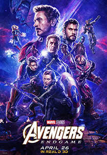
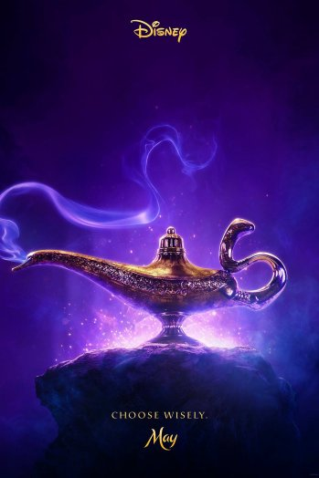

Avengers: Endgame
Celery Score: 94%
Adrift in space with no food or water, Tony Stark sends a message to Pepper Potts as his oxygen supply starts to dwindle. Meanwhile, the remaining Avengers -- Thor, Black Widow, Captain America and Bruce Banner -- must figure out a way to bring back their vanquished allies for an epic showdown with Thanos -- the evil demigod who decimated the planet and the universe.
Latest Review: Jackson Carta - "Excellent Film"
Endgame consists almost entirely of the downtime scenes that were always secretly everyone's favorite parts of these movies anyway.

Aladdin
Celery Score: 56%
When street rat Aladdin frees a genie from a lamp, he finds his wishes granted. However, he soon finds that the evil has other plans for the lamp -- and for Princess Jasmine. But can Aladdin save Princess Jasmine and his love for her after she sees that he isn't quite what he appears to be?
Latest Review: Pastulio Spencer - "Breathtaking"
Marwan Kenzari snarls it up as the villainous Jafar, while Nasim Pedrad is endearing and funny as Jasmine's handmaiden and best friend Dalia...
Rocketman
Celery Score: 90%
An epic musical fantasy about the uncensored human story of Sir Elton John’s breakthrough years.
Latest Review: Oscar Chung - "Rocketman Shoots for the Moon"
This dizzy, delirious jukebox musical has the energy and visual dynamism to truly reflect the outlandish aesthetic and performance style of its subject.
John Wick 3 - Parabellum
Celery Score: 89%
After gunning down a member of the High Table -- the shadowy international assassin's guild -- legendary hit man John Wick finds himself stripped of the organization's protective services. Now stuck with a $14 million bounty on his head, Wick must fight his way through the streets of New York as he becomes the target of the world's most ruthless killers.
Latest Review: Andreas Saltino - "Mr. Wick Quickly Becoming a Legend"
It's a fun, entertaining romp that knows it's ridiculous from the moment that Wick takes out a towering 7-footer (the Philadelphia 76ers' Boban Marjanović) by beating him to death in a library with a book.Ma
Celery Score: 56%
A lonely middle-aged woman befriends some teenagers and decides to let them party in the basement of her home. But there are some house rules: One of the kids has to stay sober, don't curse, and never go upstairs. They must also refer to her as Ma. But as Ma's hospitality starts to curdle into obsession, what began as a teenage dream turns into a terrorizing nightmare, and Ma's place goes from the best place in town to the worst place on Earth.